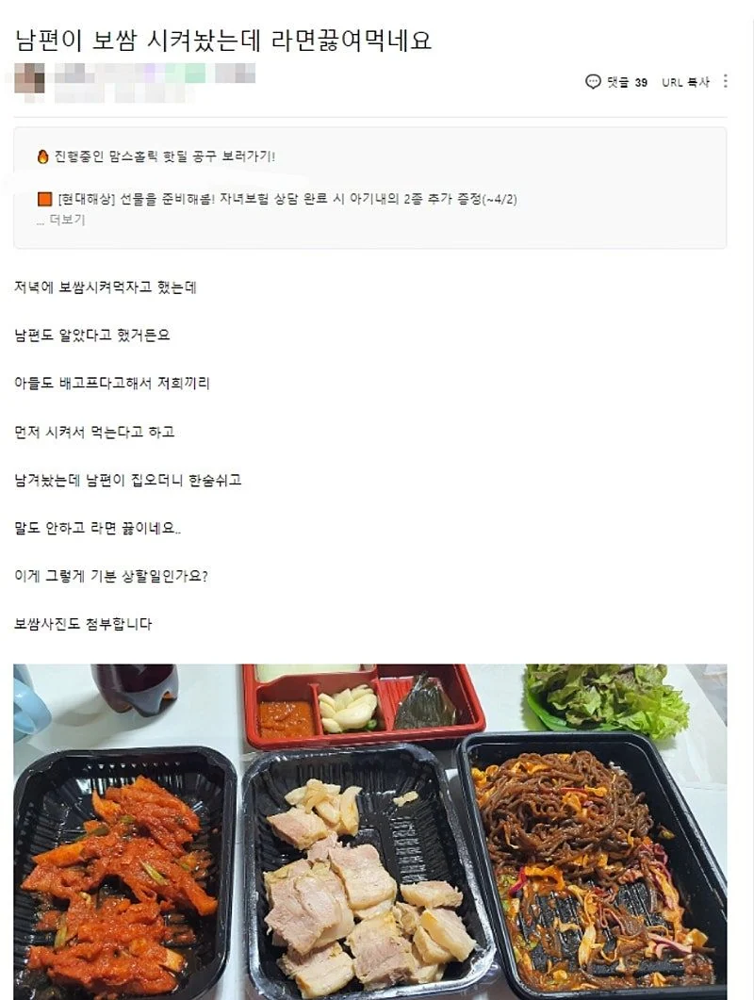
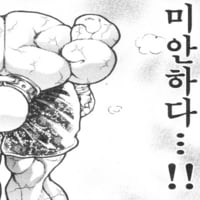

나도 안먹어 자존심도 없나 에후
저런거 그냥 하나하나 넘어가면 나중에 가장 개 호구로 봄.
가족이라면 배고파도 좀 참았다가 같이 먹자
아니면 이쁘게 덜어놓고 먹든가
솔직히 나는 별 생각없이 먹을꺼긴 한데 기분 나빠하는 것도 이해는 강
보쌈이 너무 뒤적거린 티가 나서 별로긴 해.
그릇에 따로 덜어놓지 않더라도 보쌈이 처음 배달왔을 때처럼 가지런히 놓여있었으면 느낌 확 달랐을걸
저건 먹다 남았다는 느낌이고, 가지런히 놓여있으면 남편거 빼고 덜어먹었다는 느낌이고.
가장 취급이 마당 누렁이만도 못하구만ㅋㅋㅋ 불쌍하다 불쌍해
이게 문제가 없다고?ㅋㅋ 그럼 느그집에서 누렁이해라
먼저 덜어두던가 아니면 먹고 남겨둘거면 새로 반찬통에라도 담아뒀으면 뭐라 안하겠지
최소한의 매너도 차리지 않는데 라면이나 때려먹는게 낫지
개밥도 아니고 이건 시발 ㅋㅋㅋ
커오면서 가정교육을 라노벨로 받기라도 한건가
라노벨한테 사과해

얼마나 병신호구로 보면 저러냐
여자가 섬세하진 못했지만 화낼것 까진 아닌데 이건 걍 남자잘못임. 물어봤을 때 오케이 해놓고 왜 짜증내지
따로 안덜어놓은게 불만이면 자기가 얘기를하던가 차라리 같이먹게 일찍들어오든가 ㅋㅋ 둘 중 아무것도 안하고 화만 내네
일단 알려줄게 많은 여자네
알려주면 됨
여자는 살아오면서 아마 걍 가족끼리 침 다섞이면서 자라왔을거임
가풍이 다르니 생기는 사소한 찐빠임
대화로 풀면 됨
근본없는집 애미가 애비한테 하던거 고대로 보고배워서 따라했네
접시에 덜어놓는 생각을 1도 안했나
가장의 입장이라면 저건 한숨밖에 안나오지
씨발년이지 최소한 찜기에 다시 쪄서 촉촉하게 가져오고 막국수도 덜어놔야지 근데 가족이면 기다렸다 같이 먹어야지 남편이 개새끼야 남은 짬처리하게?
일단 둘이서 식사를 마쳤다는건 최소한으로 잡아도 1시간 정도 방치된 식사임
그대로 내어줬으면 식어서 굳어버린 보쌈에 떡져있는 막국수 상태가 먹을만한건 무김치 밖에 없음
그리고 용기 그대로 데웠다면 전자렌지를 사용했을건데 보쌈고기 특징상 전자렌지에 데우면 잡내 오지게남
스팀으로 데워왔다고 하더라도 새 접시 안쓰고 쓰던용기 그대로 다시 담아서 주는건 먹다남은 짬처리 느낌을 벗어날 수 없음
근데 다 식은 보쌈 고기라고 하더라도 김치찌개 끓이듯이 해서 라면사리 넣어서 먹으면 개꿀맛인데 그냥 라면만 끓여서 먹는건 뭔가 삔또가 상했지만 대놓고 이야기 할만큼 큰건 아니라 남겨준 음식을 거부하는 모습으로 나 삐졌어 이러는 개씹 하남자 무브먼트라 남자쪽이 더 병신같긴함
뭘 덜어놨으면 된다는 말들이 그렇게 많나 모르겠네
씨발 좀 기다렸다 처먹어 돼지야 존나 안봐도 개뚱뚱할 듯
솔직히 애기가 배고프면 간단한 요기주고 기다리던가
용기를 따로 담던가 하지
바깥일 개고생하다 온 남편한테 개밥내주는 마누라를 집에서 재운다고? 안쫓아내고? ㅋㅋㅋㅋㅋ
애새끼핑계는 앰뒤년이 ㅋㅋ 남편 오든말든 지가 빨리 쳐먹고 싶었겠지 퇴근시간도 안기다려주고 먼저 먹겠다고 전화왔을때 남편 기분은 이미 개씹창났을거임 가족이랑 뭘먹고싶었던거지 먹다남은 족발따위를 먹고싶은게 아니거든
그릇에 담아주기만햇어도 남자라면 충분히 납득하고 먹엇을텐데
평소에 무시하고 쌓인 게 터진 거겠지. 평소에 극진히 대하다가 배고파서 별 생각없이 허겁지겁 먹고 남긴거면 웃고 넘겼겠지 뭐. 우리 가족은 진짜 미친듯이 친해서 누구 입에 들어갔다가 나온 것만 아니면 아무 신경 안 써서 전혀 노상관
저건 어디서부터 바로잡아야 할지 감도 안 잡힌다
남편 존나 불쌍하네
보쌈 적으니 라면까지 끓여서 맥주에 캬아
식사 텀 짧으면 괜찮긴한데 몇시간뒤에 온다고 하면 덜어놓고 먹는 게 기본이지
접시에 깔끔이 덜어놨어도 저렇게까지 기분 안상했다
시골에서 먹다가 남은거 개주는 느낌으로 남긴거네
시간이 안맞았으면 접시에 잘 덜어놓기라도 했으면...
먹다남긴느낌 너무 나잖아
처음부터 좀 덜어놓던거 해야지
이건 그냥 가정교육이 안된 사람임
남여 혐오 그런게 아니라 그냥 가정교육이 안된 예의없는 사람이라는것뿐
일단 설문은 내 기준이니까 먹는다고 했는데
예의가 없는거지 본문은
??? : 내가 너 눈치봐야해? 보쌈 먹는댓잖아? 왜 라면 먹어? 내가 잘못 했다는거야? 상처주네? 글 올린다
나는 오케이